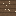

連作の耕地（やせた耕地）
Continuously Cropped Farmland (Worn)・ブロック・Agriculture
仮（まだ本物どおりでない所がある）
本当の歴史：[11-03] 輪作（800年）

説明
①子ども 同じ作物ばかり育てている畑。続けすぎると、とれる量が減る。
②学生 ふつうの耕地で熟した作物を収穫すると、何を何回続けたか覚える。同じ作物（小麦・ヒトツブコムギ・ニンジン・ジャガイモ・ビートルート）を3回続けると、その収穫から1つ少ない。戻し方：違う作物を育てる・豆を育てる・堆肥や肥料をまく・何も植えずに休ませる（休閑）。
③大人 同じ作物は同じ養分ばかり使い、その作物につく病気や虫も土に増える（連作障害）。中世ヨーロッパの三圃式は、畑を3つに分けて冬作・夏作・休閑を回した。休ませた畑は家畜を放して、ふんで肥えさせた。
④ガチ 1730年代、イギリスのチャールズ・タウンゼンドが広めたノーフォーク四輪作は、小麦・カブ・大麦・クローバーを4年で回して休閑地をなくした。カブは冬の家畜のえさ、クローバーはマメ科で窒素を入れる。家畜が冬を越せるので、ふん（肥料）も増えた。
作り方
（作り方のレシピは無い：拾う・掘る・ほかの方法）
使い道
（このアイテムを使うレシピは無い）